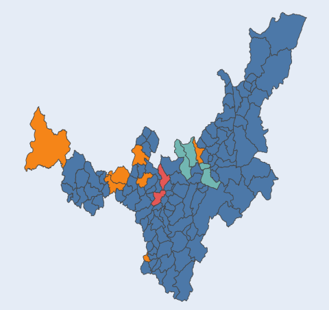

Dash app

"After advanced data cleaning, I developed an interactive web page using the Python Dash Framework. This web page shows interesting findings about the Boyacá department's automotive fleet.
I am an industrial engineering professional with more than five years of experience, passionate about science and data analysis and problem solving. With analytical skills, I look for innovative solutions to improve business efficiency. My goal is to take advantage of data analysis tools and techniques to add value and make informed decisions that drive organizational success.
"After advanced data cleaning, I developed an interactive web page using the Python Dash Framework. This web page shows interesting findings about the Boyacá department's automotive fleet.
A Dashboard developed in Power Bi that will allow to have a clear and precise vision of the performance of a company in real time. Gain valuable insights and make informed decisions to drive business growth.
Data Cleaning on the dataset of the vehicle fleet in Boyacá, provided by the government of the department through the page "datos.gov.co" The objective is to obtain a general understanding of the information and characteristics of the dataset, perform a deep cleaning, identify patterns and trends, as well as possible relationships between variables.
This project aims to unlock the power of raw economic data by transforming it into a more structured and queryable format using SQL. By leveraging the power of SQL, I was able to easily analyze the data to gain valuable insights to help me make better decisions.